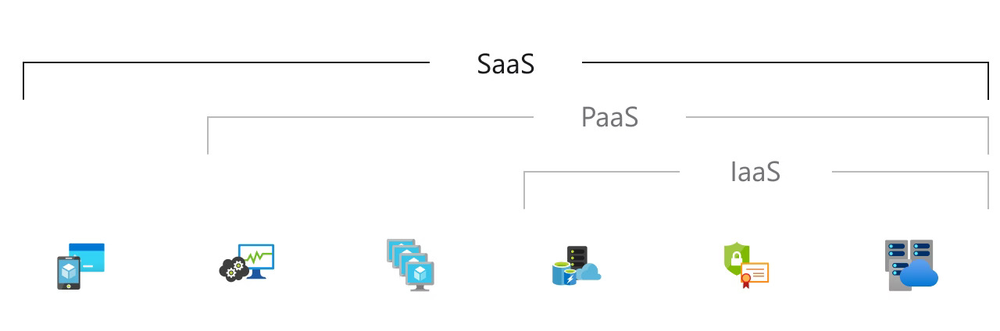

Šta je SaaS?
Software as a service
Azure Softver kao usluga (SaaS) omogućava korisnicima da se povežu i koriste aplikacije smeštene u oblaku preko interneta. Česti primeri obuhvataju e-poštu, kalendarisanje i kancelarijske alate (kao što je Microsoft Office 365). Azure SaaS pruža potpuno rešenje softvera koje kupujete na osnovu plaćanja po potrebi od pružaoca usluga u oblaku. Zakupljujete upotrebu aplikacije za svoju organizaciju, a korisnici se povezuju s njom putem interneta, obično preko veb pregledača. Sva osnovna infrastruktura, posredni softver, softver aplikacije i podaci aplikacije smešteni su u data centru pružaoca usluga. Pružalac usluga upravlja hardverom i softverom, i uz odgovarajući ugovor o usluzi, obezbediće dostupnost i sigurnost aplikacije i vaših podataka. SaaS omogućava vašoj organizaciji brzo pokretanje aplikacije uz minimalno početne troškove.
Uobičajeni scenariji korišćenja SaaS-a
Ako ste korstili web-baziranu uslugu elektronske pošte poput Outlook-a, Hotmail-a ili Yahoo! Mail-a, već ste koristili oblik SaaS-a. Sa ovim uslugama se prijavljujete na svoj nalog preko interneta često putem veb pregledača. Softver za elektronsku poštu smešten je na mreži pružaoca usluge, a vaše poruke se takođe čuvaju tamo. Možete pristupiti svojoj elektronskoj pošti i sačuvanim porukama putem veb pregledača na bilo kom računaru ili uređaju povezanom s internetom. Prethodni primeri su besplatne usluge za ličnu upotrebu. Za organizacionu upotrebu, možete iznajmiti produktivne aplikacije, poput e-pošte, saradnje i kalendarisanja; i softicirane poslovne aplikacije kao što su upravljanje odnosima s klijentima (CRM), planiranje rasursa preduzeća (ERP) i upravljanje dokumentima. Plaćate korišćenje ovih aplikacija putem pretplate ili prema nivou korišćenja.
Prednosti Azure SaaS-a:
Da biste korisnicima omogućili Azure SaaS aplikacije, nije vam potrebno kupovati, instalirati, ažurirati ili održavati bilo kakav hardver, posredni softver ili softver. SaaS čini čak i sofisticirane poslove aplikacije, poput ERP (planiranje resursa preduzeća) i CRM (upravljanje odnosima s klijentima), dostupnim organizacijama koje nemaju resurse za kupovinu, implementaciju i upravljanje potrebnom infrastrukturom i softverom.
Takođe štedite novac jer se SaaS usluga automatski prilagođava nivou korišćenja, skalirajući se prema potrebi.
Korisnici mogu pokrenuti većinu SaaS aplikacija direktno is svog veb pregledača, bez potrebe za preuzimanjem i instalacijom bilo kakvog softvera, iako neke aplikacije zahtevaju dodatke. To znači da ne morate kupovati i instalirati poseban softver za svoje korisnike.
Azure SaaS olakšava “mobilizaciju” vaše radne snage jer korisnici mogu pristupiti SaaS aplikacijama i podacima s bilo kog računara ili mobilnog uređaja povezanog s internetom. Ne morate brinuti o razvoju aplikacija za pokretanje na različitim vrstama računara i uređaja, jer je pružalac usluga već to učinio. Osim toga, ne morate unajmljivati posebne stručnjake da biste upravljali sigurnosnim pitanjima inherentnim mobilnom računarstvu. Pažljivo odabran pružalac usluga će obezbediti sigurnost vaših podataka, bez obzira na vrstu uređaja koji ih koristi.
S podacima smeštenim u oblaku, korisnici mogu pristupiti svojim informacijama s bilo kog računara ili mobilnog uređaja povezanog s internetom. I kada su podaci aplikacije smešteni u oblaku, nema gubitka podataka ako računar ili uređaj korisnika doživi kvar.